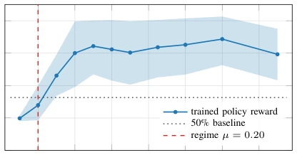
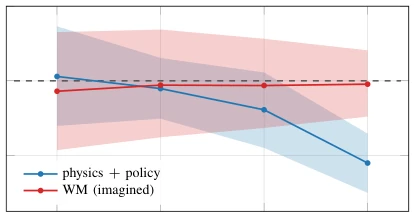

The failure of world models in long-horizon tasks is often attributed to error accumulation, but this is too vague. This paper sharply points out: the model is merely self-consistent in "kinematics", not "dynamically" real. The iKCE metric acts like a revealing mirror, exposing the model's "blindness" to physical conditions such as friction. Although the diagnostic tool is elegant, it only validates DreamerV3 and Walker, somewhat like "blind men touching an elephant". However, it indeed decomposes "error accumulation" into the more fundamental "kinematic regression", which is very useful for evaluating embodied intelligence hallucinations. Although only single tasks were tested, the logic is closed-loop, worthy of subsequent expansion. The drawback is that it does not cover multi-modal or complex contact, and is only targeted at the Dreamer architecture, raising doubts about generalizability.
Existing research attributes long-horizon failure to compounding error [8] or representation engineering [5], yet fails to distinguish error structures. Observations from driving VLM/VLA show that models rely on static context rather than temporal dynamics [11], and trajectory decoders collapse under sensor degradation [10]. These phenomena suggest that world models lack physical constraints. Existing benchmarks such as EgoDyn-Bench [11] have already suggested the decoupling of vision and physics reasoning. This paper aims to diagnose this structural defect, distinguishing kinematic extrapolation from dynamic simulation, avoiding misjudging "poor prediction" as "unstable representation". This helps understand why long-horizon planning fails at physical boundaries, rather than simply attributing it to insufficient model capacity.

Fig. 1. Empirical regime boundary. Mean episodic reward of the trained DreamerV3 walker policy across friction (K=10, 95% bootstrap CI). The regime boundary at µ=0.20 (red dashed) is the friction at which mean reward first drops below 50% of the µ=1.0 baseline (dotted). This boundary anchors the dashed reference line in Fig. 2.
Proposes iKCE (Imagined Kinematic-Consistency Error), calculating the deviation between imagined trajectories and kinematic nulls (e.g., constant velocity). The core is a perturbation protocol: testing iKCE response under friction (dynamics) and joint noise (kinematics). If the model is dynamic, friction changes should cause iKCE changes; if kinematic, then iKCE is insensitive to friction. It is necessary to ensure the horizon is longer than the gait cycle to accumulate friction effects. Formula (1) defines the error, testing via log-log regression whether the slope is zero to determine if dynamic imagination is possessed. This protocol does not depend on internal model structure, only diagnosing through input perturbation and output consistency, possessing universality. In specific implementation, friction coefficients are scanned in [0.1, 1.7], joint noise is Gaussian perturbation, ensuring physical side response while kinematic side does not respond, thereby isolating dynamic features.

Fig. 3. Horizon-emergence test. Slope β = ∂log(iKCE)/∂log(µ) of the friction sweep at four measurement horizons T ∈{8, 16, 32, 64}, computed by re-integrating the saved T=64 per-step iKCE traces (no new rollouts). Physics slope (blue) grows in magnitude with T and crosses out of the CI-contains-zero region by T=64. WM slope (red) is statistically indistinguishable from zero at every horizon. Dashed line marks the H2 flatness target (β = 0). Shaded bands: 95% percentile bootstrap CI over 1000 resamples at the rollout level.
Based on DreamerV3 checkpoint on DMC walker-walk. Metrics are iKCE and reward. Results: Imagined iKCE is two orders of magnitude higher than physical reality, reaching 180 times at T=16. Friction scan shows, physical side iKCE decreases with friction, reward collapses; imagined side iKCE statistically flat, ignoring physical boundaries. Ablation experiments exclude Actor training horizon and domain randomization interference, confirming diagnostic validity. Appendix shows per-step residual structure differences, physical side has contact event spikes, WM side smooth, further supporting the kinematic regression hypothesis. This indicates the model did not learn the impact of friction on dynamics.